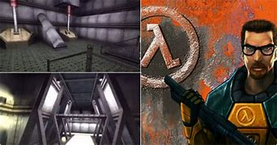
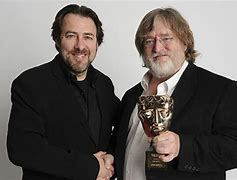

Half-life's devolopment had several issues along the road, such as trying to get the game working with limited time because their publisher then wanted a strict deadline.
Most of the devolopers used to work a microsoft. After microsft grew larger they didn't want to wokr in such a big company so two people split off and wanted to start their own game company
The first two were Mike Harrington and Gabe Newell
"On the surface, we should have failed. And realistically, both I and Mike thought we'd get about a year into it and realize we made terrible mistakes and go back to our friends at microsoft and ask for our jobs back."
Said Gabe in the 25th anniversary documentary for Half-Life.
"We did think we knew a fair bit about software devolopment, that there were expertese that goes into it. I think we also had some pretty clear ideas of how to design a company."
"So when were were building Half-Life, we were designing Valve at the same time."